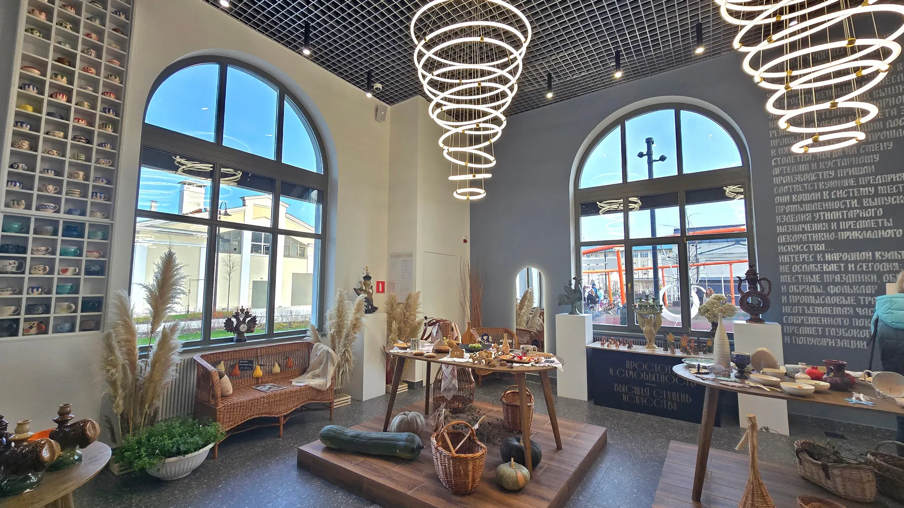
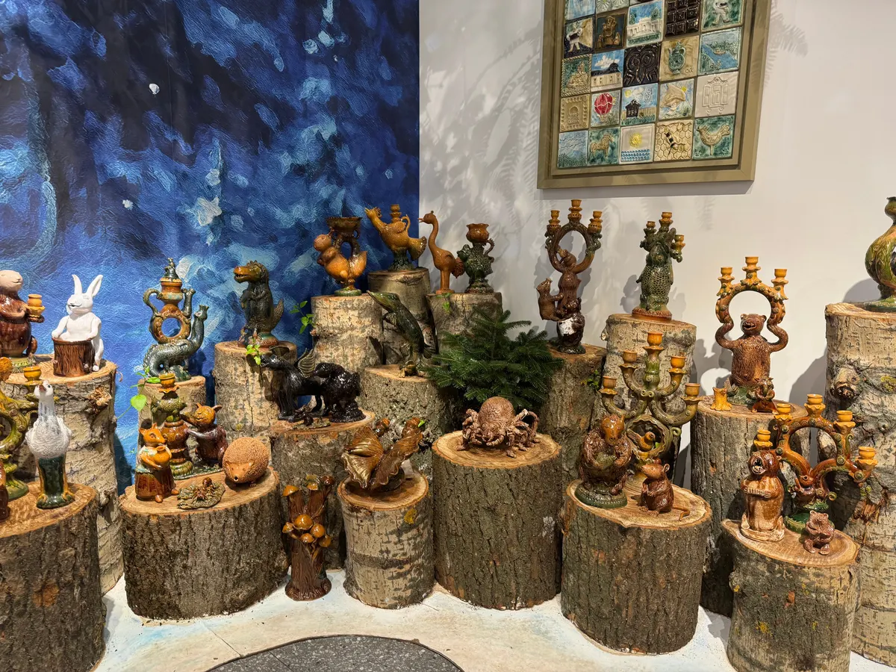
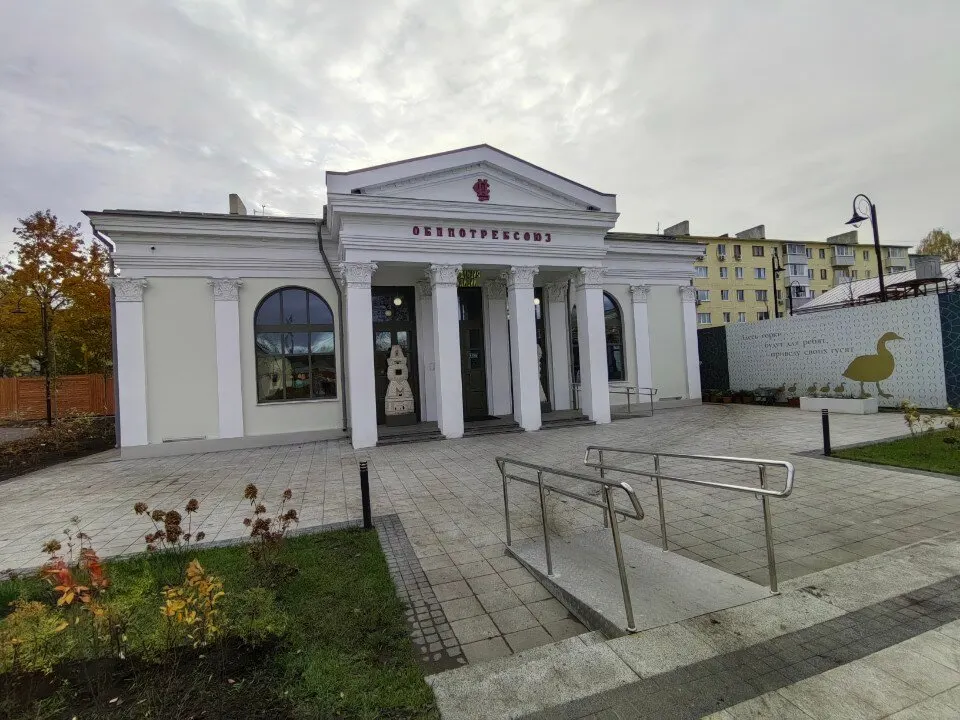
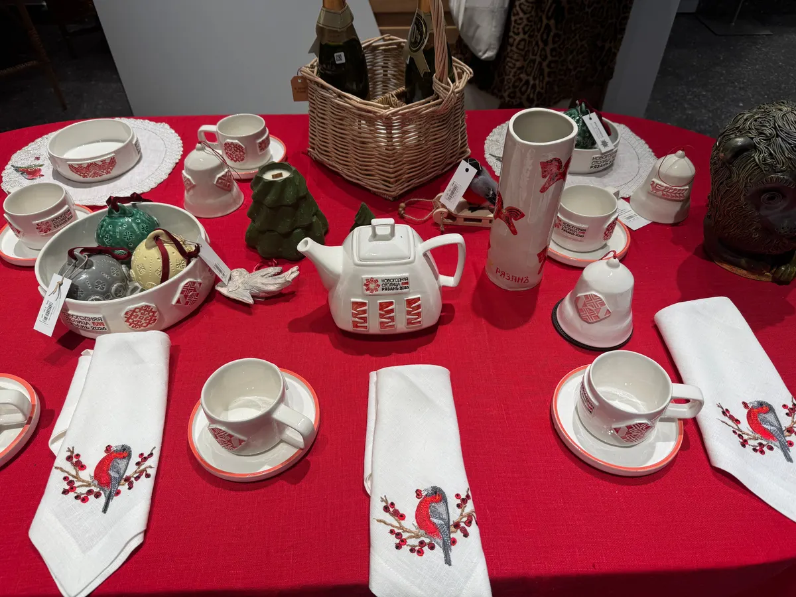

Торговый Городок, 23 · каждый день 11:00–20:00
Народные промыслы Рязанского края – в «Резиденции традиций»
Шиловская лоза, Михайловское кружево, кадомский вениз, керамика мастеров. Можно посмотреть, потрогать и купить. Каждый день с 11 до 20.
- Открыто каждый день 11:00–20:00
- Товары ручной работы
- Оплата картой

Цены
Прайса на карточке пока нет. В отзывах пишут: «Цены разные – и демократичные, и не очень». Цену на нужное изделие подскажем в мессенджере.
Что представлено
- Кадомский венизуточнить
- Михайловское кружевоуточнить
- Шиловская лозауточнить
- Керамика мастеровуточнить
- Подарки из деревауточнить
Список промыслов собран из отзывов гостей на Яндекс.Картах и может отличаться от текущей экспозиции.
Как посетить
- 01
Напишите заранее
Если ищете конкретный промысел или изделие – спросите наличие.
- 02
Приходите в Торговый Городок, 23
Павильон открыт каждый день с 11:00 до 20:00.
- 03
Посмотрите и выберите
Изделия можно рассмотреть вблизи. Менеджеры помогают с выбором.



Что говорят гости
Оценка 4,8
31 оценка и 18 отзывов на Яндекс.Картах.
88 фото на карточке
Экспозицию можно посмотреть заранее.
Помогают с выбором
Гости пишут, что менеджеры помогли выбрать изделия и отправить покупки.
Отзывы с Яндекс.Карт
«Очень интересное и важное место для развития и продвижения культуры и традиций региона. Были в качестве туристов, вдохновились и воодушевились. Отдельное спасибо девушкам-менеджерам из павильона с Кадомским венизом, очень помогли с выбором изделий, помогли все отправить! Чудесные, внимательные и влюбленные в свое дело! Вернемся еще много раз❤️»
Tanya S · 27 июня
«Необыкновенное место! Необыкновенные люди. Жаль, что мало кто знает о нем. Здесь можно напитаться Русью и приобрести что-то на подарки для гостей города, в память о Рязани.»
Анна Сорокина · 18 сентября
«Хороший музей-магазин! Внутри можно познакомиться с творчеством мастеров, промыслов рязанского края, например, Шиловская лоза, Михайловское кружево и многое другое. Внутри красивый и стильный вид. Находится на Рязанской ВДНХ. Рекомендую всем!»
Илья Король · 3 июня 2025
Отзывы с карточки на Яндекс.Картах, без правок.
Частые вопросы
Где вы находитесь?
Рязань, территория Торговый Городок, 23.
Когда открыто?
Каждый день с 11:00 до 20:00.
Это магазин или музей?
И то, и другое: гость в отзыве называет «Резиденцию» «музей-магазином». Изделия можно посмотреть и купить.
Напишите, что вас интересует – подскажем
- Адрес
- Рязань, территория Торговый Городок, 23, Рязань
- Часы
- каждый день 11:00–20:00
- Телефон
- +7 (915) 590-25-87